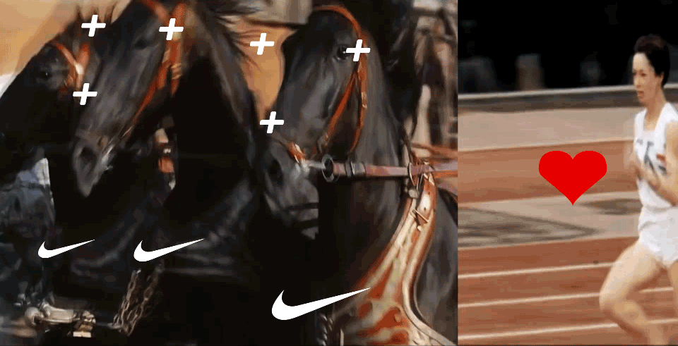
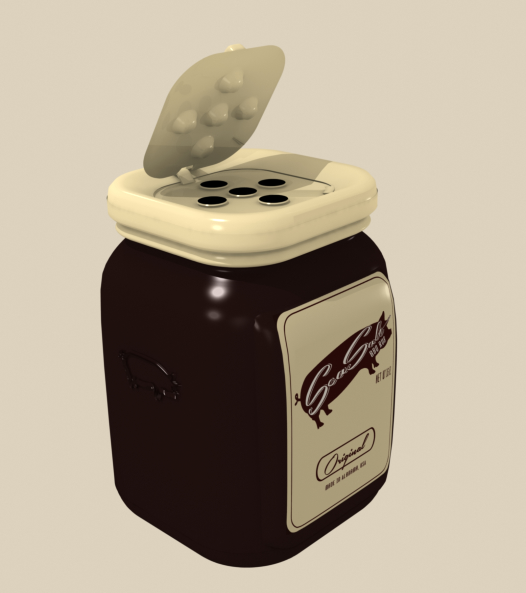
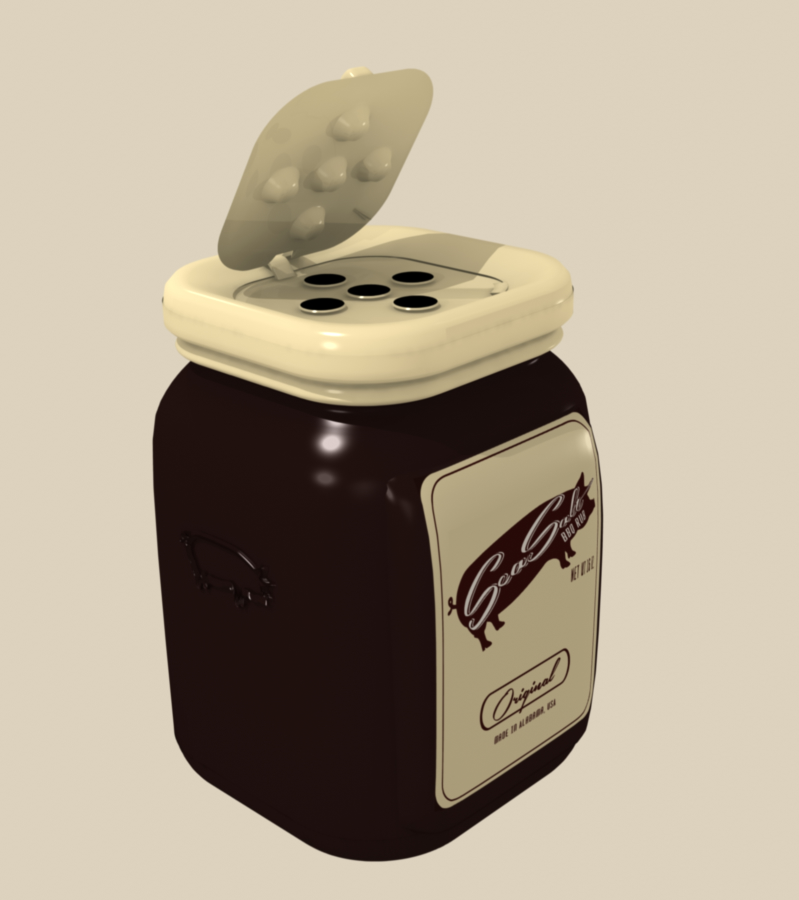

ADDITIONAL CREDITS for NIKE VIDEO COLLAGE project
Music:
Elektrobank
by The Chemical Brothers
Footage:
300 (2006)
STS 129 HD launch
Ben-Hur (1959)
Batman: Gotham Knight (2008)
Michael Johnson Breaks 200m & 400m World Records - Atlanta 1996 Olympics*
Women's 200m Semi-Finals - Adeoye, Simpson & Peter _ London 2012 Olympics*
Before Usain Bolt - The First Jamaican Sprint Star Arthur Wint - London 1948 Olympics*
Incredible Finish To The Marathon - London 1948 Olympics*
Harrison Dillard Wins A 100m Photo-Finish _ London 1948 Olympics*
Jim Hines Breaks The 10 Second Barrier For 100m Gold - Mexico 1968 Olympics*
Incredible Moment As Underdog Billy Mills Wins 10,000m Gold - Tokyo 1964 Olympics*
Women's 10,000m Final - London 2012 Olympics*
Athletics Women's Marathon - Ethiopia GOLD - London 2012 Olympic Games Highlights*
Bob Hayes - Only Man To Win Olympic Gold & Superbowl _ Tokyo 1964 Olympics*
Ann Packer Wins 800m Gold For Great Britain - Tokyo 1964 Olympics*
Derek Redmond's Emotional Olympic Story - Injury Mid-Race | Barcelona 1992 Olympics*
Usain Bolt Wins 200m Final -- London 2012 Olympics*
Athletics Women's 100m Semifinals (3 Heats) - Full Replay -- London 2012 Olympic Games*
Wyomia Tyus Retains Olympic 100m Title - First Ever _ Mexico 1968 Olympics*
The sprinting records that still stand - Florence Griffith Joyner - Seoul 1988 Olympic Games*
USA's Sanya Richards-Ross Wins Women's 400m Gold - London 2012 Olympics*
USA's Gail Devers Claims 100m Gold In Tight Finish - Barcelona 1992 Olympics*
Fermin Cacho wins Gold - Barcelona 1992 Olympics*
Jim Hines Breaks The 10 Second Barrier For 100m Gold - Mexico 1968 Olympics*
Jackie Joyner-Kersee Dominates Women's Heptathlon For Gold - Seoul 1988 Olympics*
Before Usain Bolt - The First Jamaican Sprint Star Arthur Wint - London 1948 Olympics*
Harrison Dillard Wins A 100m Photo-Finish _ London 1948 Olympics*
Linford Christie, Britain's Fastest - Barcelona 1992*
*Youtube Olympic Channel
F/A-18 Super Hornet Hi-Speed Low-Level Maneuvers Cockpit View
Spartacus War of the Damned (2013)Ep. 9 & 10
Macross Zero (2002)
Forrest Gump (1994)
Braveheart (1995)
F1 2013 Top 10 Overtakes
Troy (2004)
Seabiscuit (2003)
Last of the Mohicans (1992)
MidAmerican Energy Coal Power Plant Timelapse
Pirates of the Caribbean: Dead Man's Chest (2006)
Haywire (2011)
Golden Eagle in slow motion - Slo Mo #9 - Earth Unplugged*
Ultimate Slow Motion Bird Bath (European Starlings) - Slo Mo #10 - Earth Unplugged*
Explosion Shockwave in slow motion - Slo Mo #30 - Earth Unplugged*
Slow Motion Barn Owl Attack - Slo Mo #11 - Earth Unplugged*
Slow motion rattlesnake - Slo Mo #3 - Earth Unplugged*
Slow Motion Shaolin Warriors - Slow Mo #12 - Earth Unplugged*
Goshawk hunts in slow motion - Slo Mo #7 - Earth Unplugged*
Why Beetles Are Awesome! - Slo Mo #38 - Earth Unplugged*
Cheetah vs Greyhound - World's Fastest Dog In Super Slow Motion - Slo Mo #29 - Earth Unplugged*
Butterfly in epic slow motion - Slo Mo #22 - Earth Unplugged*
*Youtube Earth Unplugged TV
Amman - A City in Motion (Time Lapse Video)
Gabriela Andersen Los Angeles 1984
Akira (1988)
Amazing Galloping Horses 1080p HD
The Matrix (1999)
Animatrix "World Record" (2003)
Sherlock Holmes : A Game of Shadows (2011)
Apocalypto (2006)
Red Tails (2012)
Without Limits (1998)
Running Motivation - Steve Prefontaine
Gladiator (2000)
NIKE COLLAGE VIDEO
context:
Graphic Design Class proj. 2013
For the Nike collage assignment various video sources were collected and edited by the designer to be the foundation for a video juxtaposition. The graphic overlays and animations were designed to echo the constant movement and frenetic energy commonly seen in many of Nike's commercials.
role: Graphic Designer, Animator, Video Editor, Video Compiler,
software:Illustrator, Flash, Sony Vegas
Additional Credits


JCAS 3
context:
Web Development 100 Class proj. 2015
The JCAS 3 project was created to exhibit accrued introductory knowledge of html, javascript, and css. The project is comprised of 3 html pages that introduces viewers to JCAS 3 the robot, and subsequent pages that allow the user to examine the droid and command him to execute 3 dance moves. The project is currently live and can be visited here.
role: Graphic Designer, Coder, Animator, 3d Model builder
software: Sublime Text, Illustrator, Flash, Photoshop, Lightwave


 
